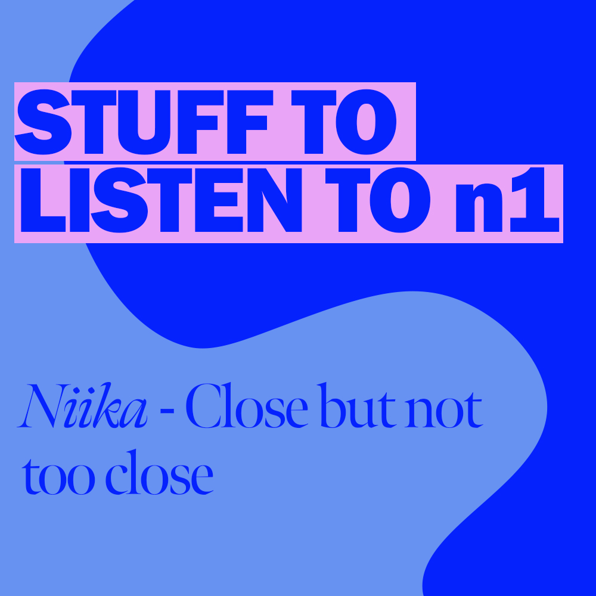

Other articles
Niika - Close but not too close
MUSIC
To be honest, I first clicked on this album because it had a beautiful cover, not really knowing what to expect from the music itself. I was pleasantly surprised after a few seconds. “Close but not too close”, is the perfect balance between a mesmerizing voice, a clean guitar sound and wise rhythmics...